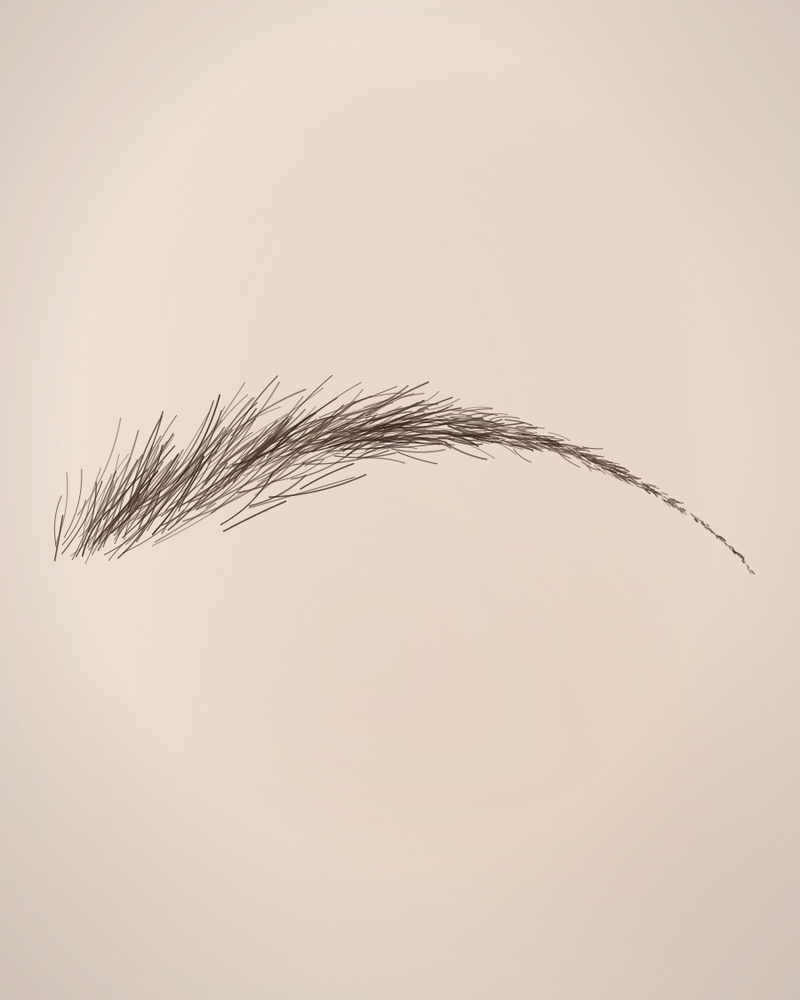

hair stroke
Nuestra técnica principal. Trazos muy finos, dibujados uno a uno siguiendo la dirección de tu propio vello, que se integran con la ceja natural en lugar de taparla. Frente a técnicas más tradicionales como el microblading, el Hair Stroke ofrece un acabado más sutil y versátil, y acompaña de forma más armoniosa la evolución del rostro con el paso del tiempo.
Estudio previoincluido
Trazo a trazoejecución
Larga duracióncon retoques
- Diseño personalizado a partir de tus facciones
- Mezcla de pigmento según tu tono y subtono de piel
- Resultado natural, equilibrado y atemporal
- Sesión de retoque para fijar el resultado